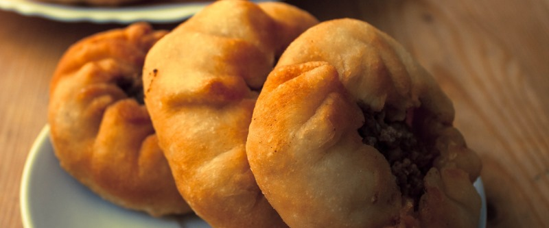

Беляши

Для теста 3,5 ст. муки просеять в миску, добавить 1 ст. теплого молока, размешнного с 20 гр. свежих дрожжей. В смесь добавить 50 гр. мягкого сливочного масла и 0,5 ч.л. соли. Все хорошенько вымешать и поставить в теплое место на полчаса.
Тесто раскатать колбаской, отрезать кругляшок, распластывать его, класть в центр фарш и защипывать края кроме центра. Выкладывать на разогретую сковороду покрытую полностью подсолнечным маслом. Обжаривать с двух сторон до золотистой корочки.